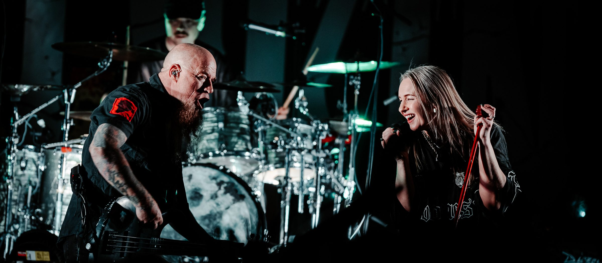
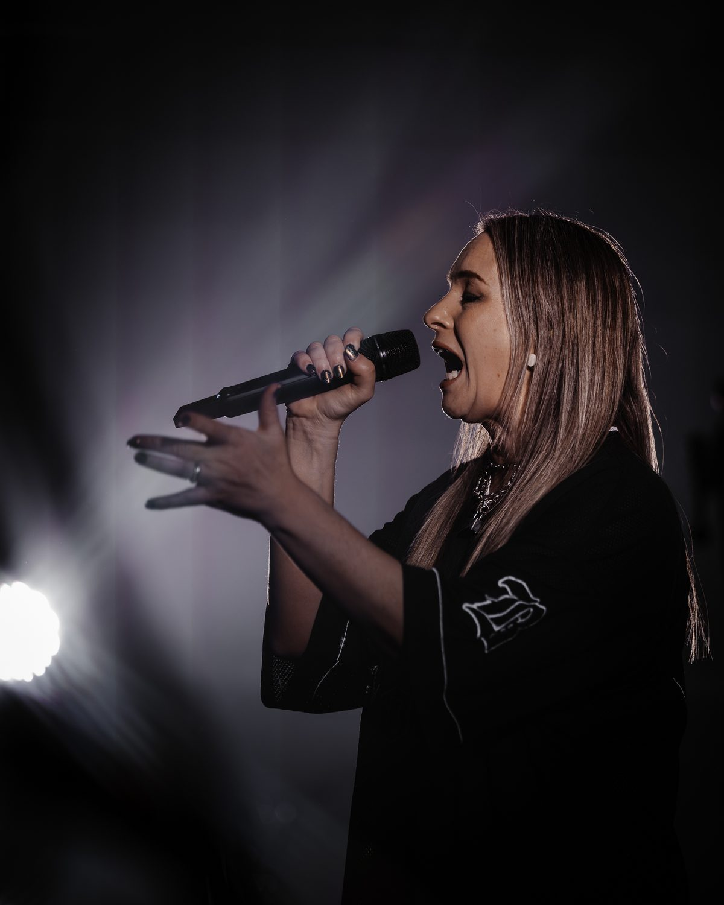
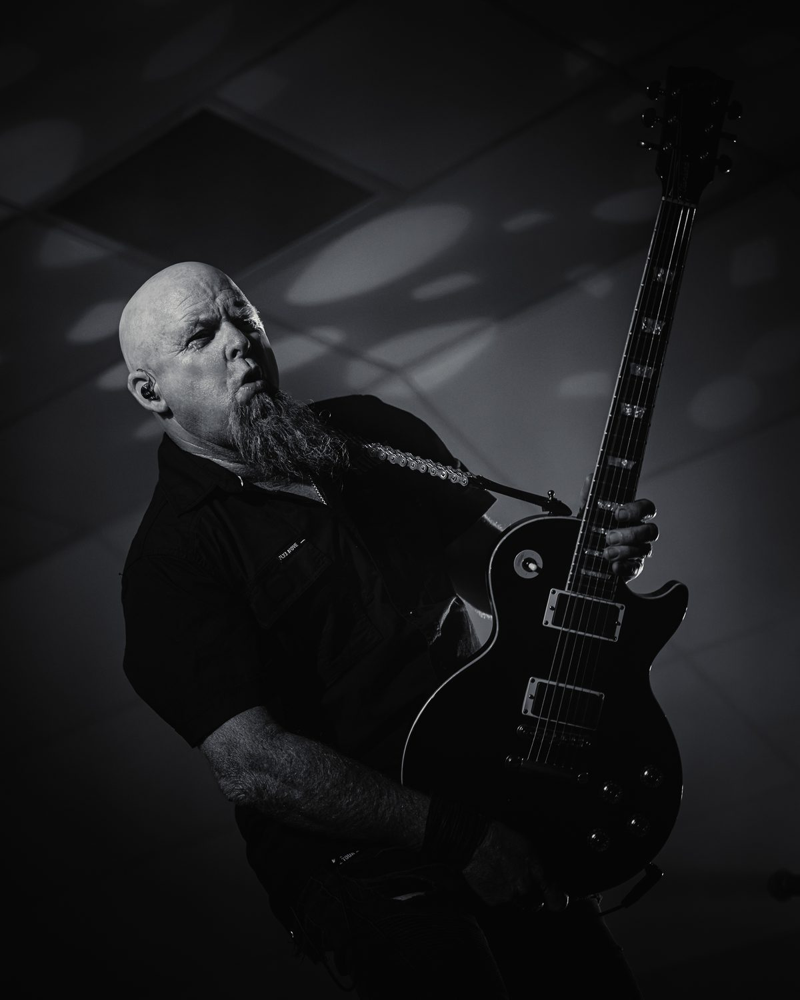
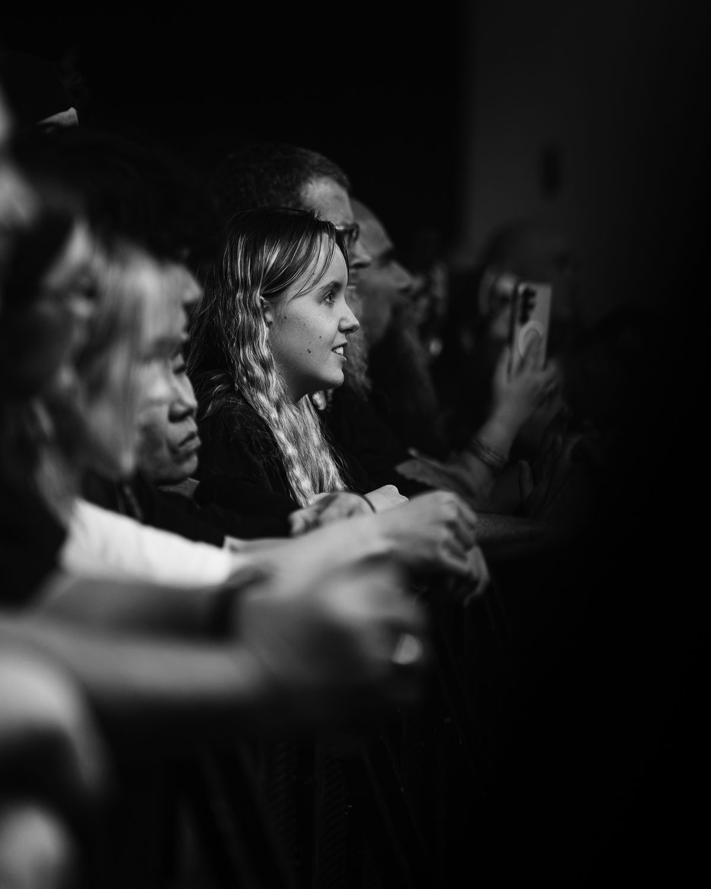
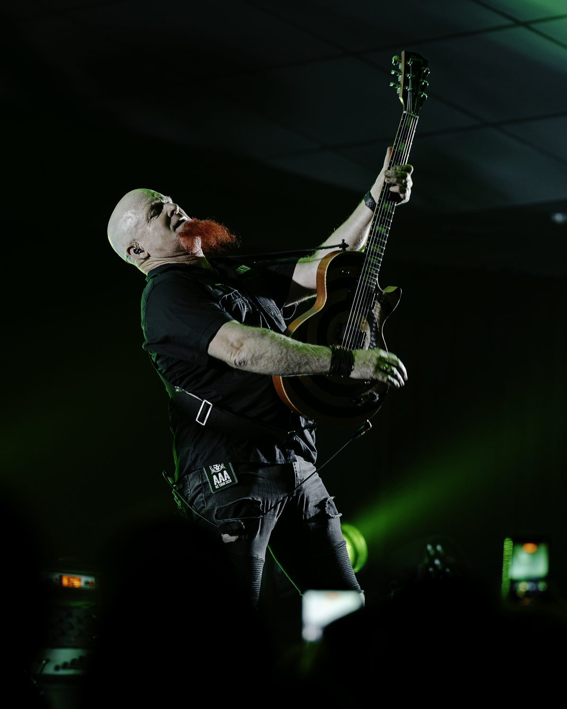
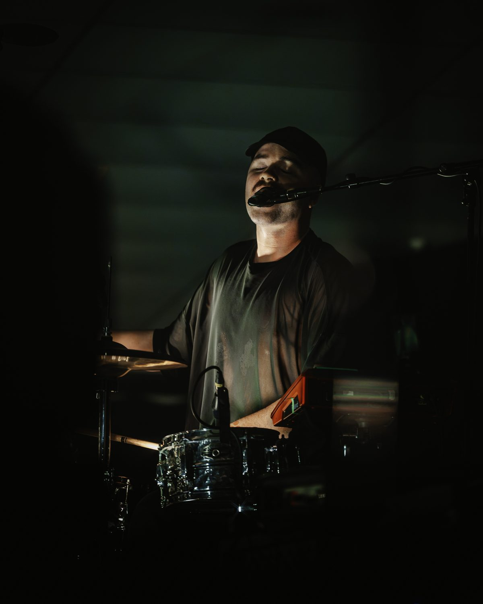
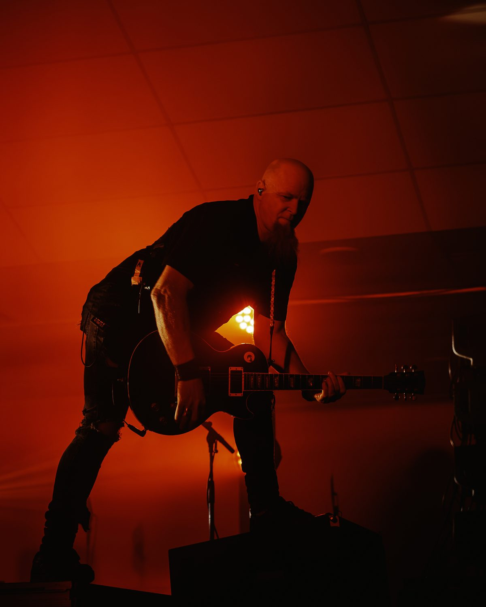

Live music
Moody lighting, fast moves and one shot at every moment. Honestly, it's my happy place. I capture the stage, the crowd and that moment the whole room sings the chorus back.

The offering
What I cover
Concerts
From the pit to the back wall. The artist and the room.
Festivals
Multiple stages, the crowd, and the atmosphere between sets.
Press & promotion
Editorial portraits and artwork-ready images for your next release.
Backstage
The nerves, the huddle, the walk to the stage.
Venues
Imagery that helps a room sell its next show.
Live films
Short vertical clips, delivered while the night is still talked about.






Ideal for
- Bands and artists
- Venues and bars
- Promoters and festivals
- Labels needing release imagery
Recent commission
Devilskin, live
A concert series photographed from the pit. Heavy light, heavier riffs, and a crowd that moved all night.